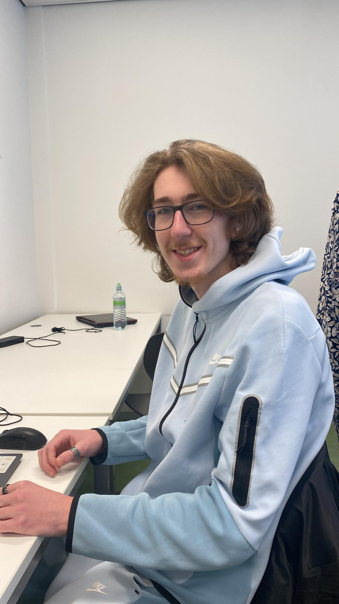

Portfolio Damian
Kopje van foto
contact gegevens
nummer: 0639849359e-mail school: 9019427@student.zadkine.nl
e-mail personal: Damian.jf2209@gmail.com
Opleiding info.
Mijn opleiding is Software Development op het Techniek College Rotterdam, op de locatie op de Schiedamse weg in SchiedamDe opleiding is 3 jaar opleiding, maar het kan in kortere tijd gedaan worden, zelf ga ik voor 3 jaar, ik wil mezelf namelijk niet de stress geven van haasten door mijn opleiding, ik neem liever mijn tijd dan dat ik alles heel hastig doe.
Op de opleiding leer je de: HTML, CSS en JS. Met deze talen leer je websites en browser games te maken.
Je loopt vanaf het 2de jaar stage, dus dat hebben wij nog niet gedaan.
Mijn doelen voor deze opleiding zijn om, de opleiding te halen, en via stage een goede werk plek te vinden.
vaardigheden
Ik kan heel snel werken als het nodig is, en wat ik lever is ook vaak goed3 en een half
Ik kan goed presenteren.
Ik ben erg goed in Engels, waardoor ik goed kan communiceren with everyone around me.
hobby's
Mijn hobbys zijn gamen sporten en chillen met me vriendenGamen is mijn favoriete hobby omdat ik altijd wel iets te doen heb als ik me verveel
Meestal sport ik 3-4 keer per week meestal met een vriend van mij en daarna ga ik altijd